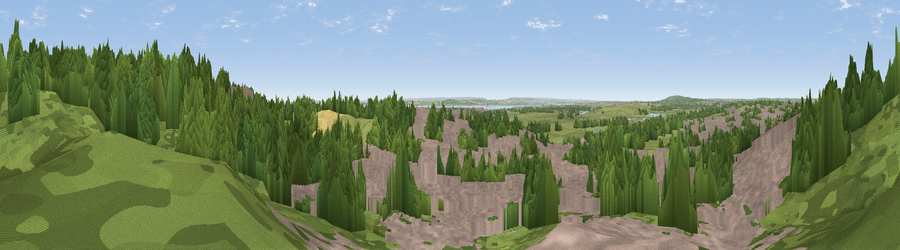

Viewpoint near South Benfleet
#19507 in England · top 20% of its area beats it · near South BenfleetWhere it is
The exact computed spot (TQ 78225 86425). Click the marker for map links.
The view, rendered

A 360° render of this exact spot computed from the terrain model, tree cover and land cover — summer colours, afternoon light, calibrated against photographs of famous viewpoints. Real trees, hedges and buildings will differ in detail.
The panorama
Grey silhouette: terrain skyline in each direction (720 bearings, Earth curvature and refraction included). Dashed green: skyline with trees (+15 m) and buildings (+8 m) as obstacles. Blue strip: how far the ground is visible on each bearing.
Where the view opens
Wedge length = distance to the farthest visible ground on that bearing (vegetation-aware). Rings at 10, 25 and 50 km.
What fills the view
47% woodland · 34% built-up · 14% grassland · 4% cropland · 1% water ·
Angular shares of the visible panorama (visual magnitude), not map area. Landscape diversity 0.52 (0–1 Shannon).
Key numbers
More beautiful places nearby
The staircase of upgrades: each row has a higher view potential than everything closer. Driving times are estimates from straight-line distance, calibrated against real road routing — check an actual route before setting out.
| Place | Direction | Drive | Score |
|---|---|---|---|
| Viewpoint near South Benfleet | ENE · 1 km | ~2 min | 62.9 |
| Viewpoint near Burham | SSW · 24 km | ~39 min | 63.1 |
| Bluebell Hill | SSW · 25 km | ~40 min | 64.8 |
| Viewpoint near Boxley | S · 26 km | ~42 min | 68.6 |
| Viewpoint near Shipbourne | SW · 39 km | ~59 min | 69.1 |
| Viewpoint near Westwell | SSE · 43 km | ~63 min | 72.2 |
| Viewpoint near Lympne | SSE · 60 km | ~83 min | 72.6 |
| Tolsford Hill | SE · 61 km | ~83 min | 77.9 |
51.54857, 0.56907 · source: screening · position refined by local search. Computed location — check access rights before visiting.